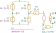

"VampBiasNullor"
.detector V_6
N1 0 6 4 5 N
R1 1 2 R value={R_a} noisetemp=0 noiseflow=0 dcvar=0 dcvarlot=0
R2 2 3 R value={R_b} noisetemp=0 noiseflow=0 dcvar=0 dcvarlot=0
R3 2 4 R value={R_c} noisetemp=0 noiseflow=0 dcvar=0 dcvarlot=0
R4 5 6 R value={(A_v-1)*R} noisetemp=0 noiseflow=0 dcvar=0 dcvarlot=0
V1 1 0 V value=0 noise=0 dc={V_P} dcvar=0
V2 0 3 V value=0 noise=0 dc={V_N} dcvar=0
.end
| RefDes | Nodes | Refs | Model | Param | Symbolic | Numeric |
|---|---|---|---|---|---|---|
| N1 | 0 6 4 5 | N | ||||
| R1 | 1 2 | R | value | $R_{a}$ | $R_{a}$ | |
| noisetemp | $0$ | $0$ | ||||
| noiseflow | $0$ | $0$ | ||||
| dcvar | $0$ | $0$ | ||||
| dcvarlot | $0$ | $0$ | ||||
| R2 | 2 3 | R | value | $R_{b}$ | $R_{b}$ | |
| noisetemp | $0$ | $0$ | ||||
| noiseflow | $0$ | $0$ | ||||
| dcvar | $0$ | $0$ | ||||
| dcvarlot | $0$ | $0$ | ||||
| R3 | 2 4 | R | value | $R_{c}$ | $R_{c}$ | |
| noisetemp | $0$ | $0$ | ||||
| noiseflow | $0$ | $0$ | ||||
| dcvar | $0$ | $0$ | ||||
| dcvarlot | $0$ | $0$ | ||||
| R4 | 5 6 | R | value | $R \left(A_{v} - 1\right)$ | $R \left(A_{v} - 1.0\right)$ | |
| noisetemp | $0$ | $0$ | ||||
| noiseflow | $0$ | $0$ | ||||
| dcvar | $0$ | $0$ | ||||
| dcvarlot | $0$ | $0$ | ||||
| V1 | 1 0 | V | value | $0$ | $0$ | |
| noise | $0$ | $0$ | ||||
| dc | $V_{P}$ | $V_{P}$ | ||||
| dcvar | $0$ | $0$ | ||||
| V2 | 0 3 | V | value | $0$ | $0$ | |
| noise | $0$ | $0$ | ||||
| dc | $V_{N}$ | $V_{N}$ | ||||
| dcvar | $0$ | $0$ |
| Name | Symbolic | Numeric |
|---|
| Name |
|---|
| $R_{a}$ |
| $R$ |
| $V_{P}$ |
| $A_{v}$ |
| $R_{c}$ |
| $R_{b}$ |
| $V_{N}$ |
Go to VampBiasNullor_index
SLiCAP: Symbolic Linear Circuit Analysis Program, Version 2.0.1 © 2009-2024 SLiCAP development team
For documentation, examples, support, updates and courses please visit: analog-electronics.tudelft.nl
Last project update: 2024-10-20 16:54:18